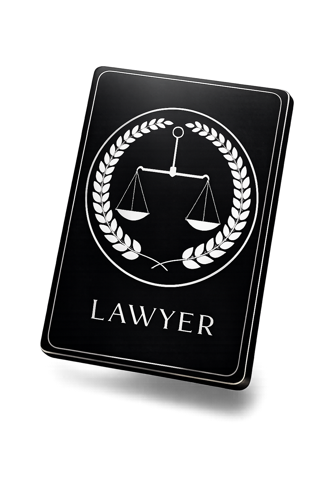
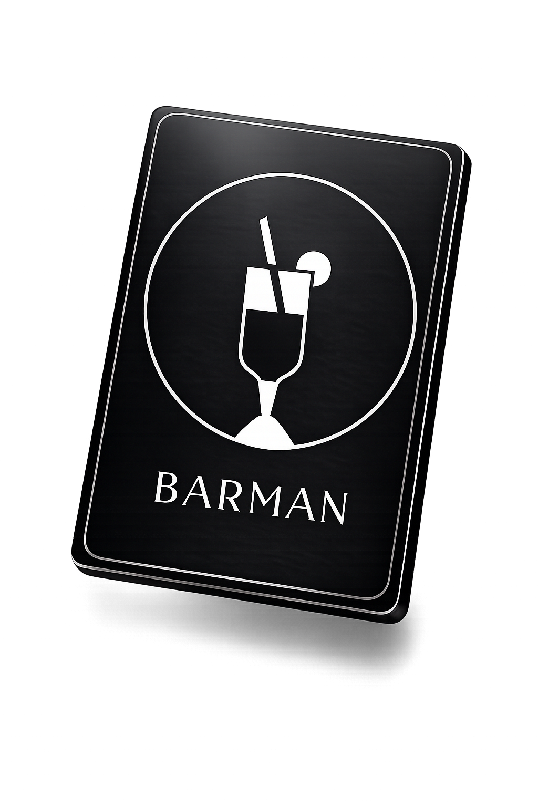
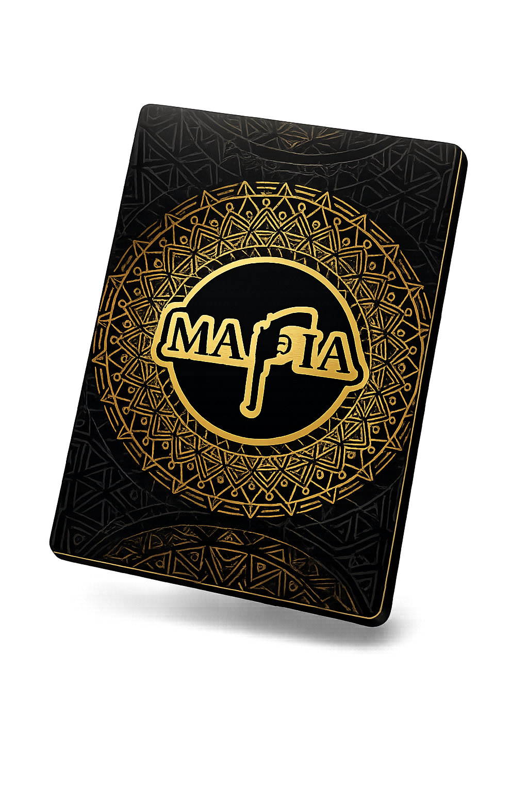

Kaip sukurti komfortą?
Renginys gali vykti skirtingais scenarijais, svarbu turėti orientyrus, kuriančius pagrindą: svečiams turi būti jauku, saugu ir aišku. Malonus apšvietimas, tinkama erdvės temperatūra, skanus maistas, šiek tiek gėlių ir laiku vykstantis koordinavimas kurs komfortą ir leis svečiams atsipalaiduoti. Kai tik dalyviams pavyksta „įsižeminti", tampa ir nuoširdu, ir smagu.
Kaip vyksta renginio programa?
Rekomenduojamas vakaro eigos planas ir gairės: skirti 30 minučių svečiams susirinkti, kol renkasi - pasitikti užkandžiais ir gaivinančiais gėrimais. Atsiminti, jog kiekvienas žmogus atvyksta su savo dienos įspūdžiais, tad būtina palikti erdvės adaptavimuisi - tam puikiai tinka laisvas laikas ir vakarienė. Kai visi bus sotūs ir įpras prie aplinkos - galėsime pradėti interaktyvią programą.
Bendra programos trukmė ~ 3 valandos.
Iš pradžių pristatysime svečius, atsižvelgiant į jų asmenines savybes ir profesijas - ši informacija sukurs „tiltus" tarp nepažįstamų dalyvių ir suteiks pagrindą tarpusavio komunikacijai.
Kviesime prie apvalaus stalo pirmą 10-uką burtų keliu. Kiekvienas svečias turės savo vardo kortelę, tad jei svečiai tarpusavyje nepažįstami - visada galės pasižiūrėti į kortelę. Pasakosime taisykles prieš pradedant sesiją. Sesijos metu - priminsime personažų funkcijas ir žaidimo eigą.

Iš viso įvyks 3 sesijos - tai yra optimalus skaičius, leidžiantis dalyviams perprasti taisykles ir pradėti mėgautis procesu. Tarp sesijų bus daromos pertraukos emocijoms ir įspūdžiams aptarti. Po „mafijos" žaidimo vedėjas pasidalins ypatingais vakaro momentais ir įteiks nominacijas.

Pasibaigus mūsų programai, įprastai svečiai tęsia dalintis tarpusavyje įspūdžiais. Štai pora atsiliepimų nuo mūsų klientų:
Rūta
"Begalo smagus, įtraukiantis ir emocingas psichologinis žaidimas "Mafija" man paliko stiprų ir nepamirštamą įspūdį. Nesitikėjau, kad vaidmenų žaidimas gali sukelti tiek daug smagių ir netikėtų emocijų! Rekomenduoju visiems, kurie nori praleisti netikėtą, intriguojantį ir labai smagų vakarą su draugais ar kolegomis. Ir ačiū Olegui - Olego ramybė, profesionalumas ir puikus humoro jausmas tiesiog paperka!"
Lina
"Labai jums ačiū už profesionaliai suorganizuotą gimtadienį! Restoranas 10 balų! Stalų dekorai 10 balų! Gėlės iki dabar džiugina, tobulos. Žaidimas, jo vedimas 10 balų, įspūdžių visam dar užteko visam sekmadieniui 😊"

Vaiva
"Mafia žaidimas vedamas Oleg pranoko lūkesčius. Apgalvota kiekviena detalė ir išpildymas! Sukurta puiki atmosfera! Įsitraukimas ir ne prie stalo sėdinčių komandos narių, rodė kad visiems yra įdomu, kuris, kodėl 🙂 ką sako, ir kaip tai sako, ir ką transliuoja! Buvo įdomu pažinti komandos narius kituose vaidmenyse! Dar ir dar norėjosi grįžti prie to tobulai dekoruoti stalo! Visi prisiminimai nugulė puikiose fotografijose!"
Kiek svečių gali dalyvauti „mafijos" renginyje?
Jei užsakytas vienas žaidimo stalas - maksimalus dalyvių skaičius yra 30.
Kiekvienoje sesijoje prie vieno stalo gali dalyvauti iki 10 svečių.
- Jei svečių 30 - kiekvienas sudalyvaus vieną kartą.
- Jei svečių 10 - kiekvienas sudalyvaus tris kartus.
- Jei svečių 20 - kai kurie (tie, kurie iškris pirmieji) sudalyvaus du kartus, kiti - vieną.
Koks yra optimalus žaidimo stalų kiekis?
Jei svečių iki 20 ir renginio tikslas - jaukiai pabūti, geriau pažinti save ir draugus, rekomenduoju vieno stalo formatą. Toks formatas leidžia gilintis į turinį, dalyviai gauna daugiau erdvės eksperimentams ir spėja patyrinėti save per skirtingas taktikas.
Jei svečių 20-60 ir norisi tiesiog smagiai praleisti laiką - siūlome dviejų stalų formatą. Į žaidimo sesijas bus integruoti unikalūs personažai, vakaro dinamika bus aukštesnė, renginį ves du vedėjai.
Ar nebūna nuobodu tiems, kas iškrenta ar laukia savo sesijos?
Dažniausiai svečiams smalsu stebėti žaidimą iš šalies:

Jūratė
"Didžioji dalis šventės dalyvių nebuvo pažįstamos, tačiau šio žaidimo dėka mes visos įsitraukėme, aktyviai dalyvavome, kūrėme gyvenimiškas istorijas, narpliojome detektyvinius voratinklius. Įtrauku buvo žaisti, bet ne mažiau įdomu ir iš šalies stebėti žaidimą (nes matomi žaidimo veikėjų vaidmenys)."
Kokios „mafijos" žaidimo taisyklės ir vaidmenys MafiaInLT formate?
Dienos etapas:
Vedėjas baigs pasakoti taisykles ir išdalins 10 vokų. Juose bus 3 kortelės su mafijos vaidmenimis ir 7 kortelės su taikiaisiais piliečiais. Jei jūs gausite „mafijos" vaidmenį, jūsų užduotis - eliminuoti visus taikiuosius ir padaryti tai taip, kad niekas jūsų neįtartų. Jei gavote taikaus piliečio vaidmenį, jūsų užduotis - intuityviai ar logiškai surasti „mafiją" ir ją išbalsuoti iš žaidimo.
Pirmasis ratas - žaidėjų prisistatymas. Kiekvienas paeiliui pasakos istoriją. Šis ratas skirtas kūrybiškumui atskleisti, jame svarbus mūsų dėmesingumas. Antrasis ratas - pasidalijimas įtarimais. Šioje fazėje vedėjas atskleis technikas, kurios gali padėti pastebėti, ką jaučiame, ir suprasti, ką tai reiškia. Trečiasis ratas - bendra diskusija, po kurios vyks balsavimas. Pasibaigus balsavimui, vienas iš žaidėjų bus eliminuotas.
Nakties etapas:
Visi dalyviai užsidės kaukes, kad nematytų, kas vyksta aplink. Vedėjas paeiliui kvies personažus: mafiją, daktarą, šerifą, advokatą ir šios sesijos specialų papildomą veikėją. Kiekvienas personažas turės įvykdyti savo funkciją. Vedėjui paskelbus nakties pabaigą, visi galės nuleisti kaukes. Žaidimas pasibaigia, kai yra eliminuoti visi „mafijos" nariai arba visi taikieji personažai.



Kai kurie personažai ir atskiros žaidimo fazės (pavyzdžiui, balsavimo metodas) yra unikali intelektinė klubo nuosavybė.
Ar teikiame patalpas „mafijos" žaidimui? Kas yra svarbu pasirenkant vietą?
Savo patalpų neteikiame, tačiau teikiame jums tinkamų patalpų paieškos ir rezervacijos paslaugą.
Visų pirma svarbus intymumas - salė turi būti nepereinama (privati). Jei renginys vyks dienos metu - puiku, kad erdvė turėtų langų, natūrali šviesa įprastai kelia nuotaiką. Jei renginys vakarinis - apšvietimas turi būti netiesioginis, kuriantis jaukumą. Salės temperatūra turi būti komfortiška (atsižvelgiant į sezoną). Jei planuojama vakarienė - reikėtų pasirūpinti atskirais stalais. Jei planuojami užkandžiai ir gėrimai - reikėtų pasirūpinti patogiais (aukštais) staliukais.
Jei norisi renginio savo namuose - svarbu, kad tilptų mūsų stalas (180 cm skersmens) ir 11 kėdžių aplink. Jei norisi įkvepiančios aplinkos - rekomenduoju papildomai rinktis dekoravimo paslaugą, gėlės įneša grožio ir gyvybės.
Kuo skiriasi žaidimo organizavimas nuo renginio organizavimo?
Renginio organizavimas jungia savyje platesnį paslaugų sąrašą - klientui tereikia atvykti į renginio vietą, viskuo bus pasirūpinta. Bus surasta (pagal poreikius) tinkama vieta, suplanuota programos eiga, iš anksto suderintas meniu. Bus pasirūpinta erdvės dekoravimu. Renginio dieną koordinatorius nukreips ir suorientuos svečius.
O jei mėgstate kurti šventę savarankiškai ir ieškote tik interaktyvios renginio dalies, pakaks žaidimo organizavimo paslaugos.
Sukurkite savo renginį
Pasirinkite stalų skaičių, renginio datą ir pageidaujamas paslaugas
Skaičiuoti kainą